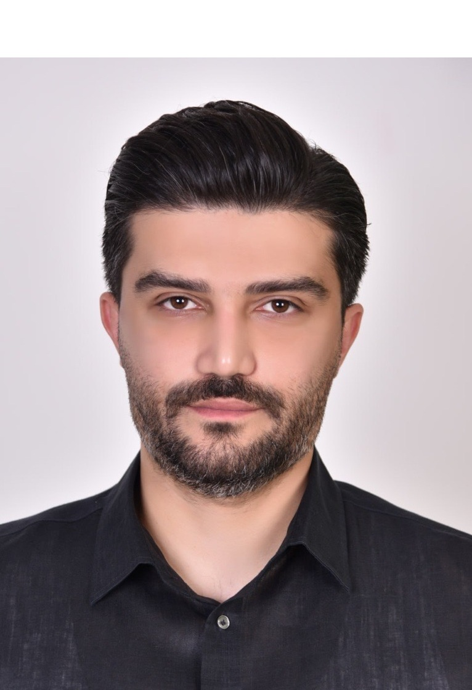

People
PhD Researcher
University of Southampton
Amirreza Zarei is a PhD Researcher in Structural Engineering at the University of Southampton, working within the Infrastructure Group. His research focuses on the seismic retrofit and service-life extension of ageing reinforced concrete bridges, particularly structures built before modern seismic design standards. He is currently investigating the inelastic buckling of reinforcing bars in bridge piers, an important failure mechanism in reinforced concrete columns subjected to cyclic earthquake loading, and developing a material model that captures the post-buckling behaviour.
His work combines laboratory experiments, finite element analysis, nonlinear dynamic modelling, and performance-based assessment to study how deterioration, including corrosion, cracking, and carbonation, affects seismic performance. The research aims to support sustainable retrofit solutions using conventional and low-carbon cementitious materials, extend structural service life, and reduce maintenance needs.
Before beginning his PhD, Amirreza conducted research in geotechnical earthquake engineering, focusing on the physical modelling of soil liquefaction using shaking-table tests and particle image velocimetry.